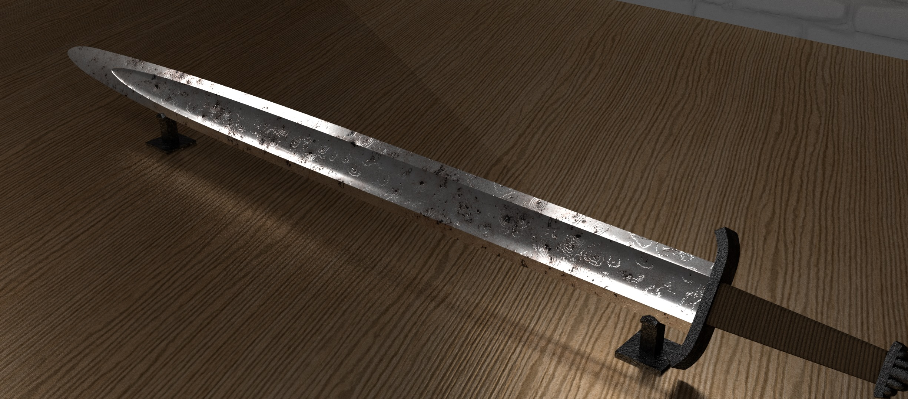
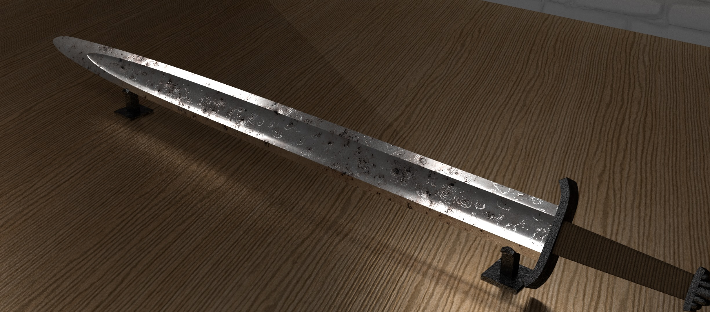

Jagged Hero
Jagged Hero is a 3d, third person, role-playing game, where the player plays as a sheet of paper that
has the ability to fold into various shapes resembling objects. The players main shape resembles a bipedal human-like shape as the character
maneuvers throughtout various levels. As the player traverses the level they will obtain the ability to transform into different shapes,
each giving a distinct advantage when encountering obstacles. On a basic level the player must sole sipme puzzels and collect tokens
to unlock a final treasure room. The puzzles consist of pressure plates, moving platforms, and manipulation of character transformations
to overcome the enviroment. Player transformation is useful for avoiding or completing objectives. Once the player collects all five Toy Tokens, they can
enter the treasure room and complete the game.

 
